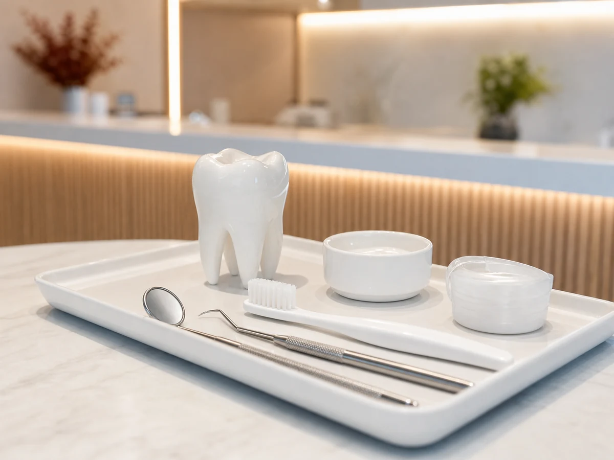
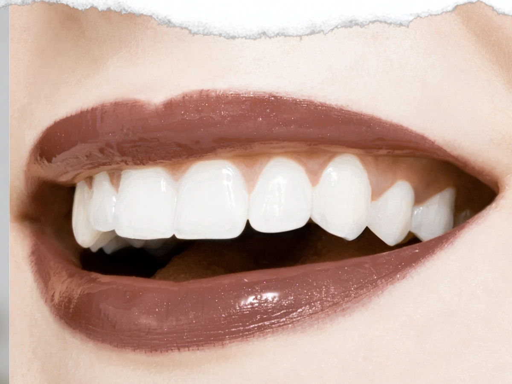
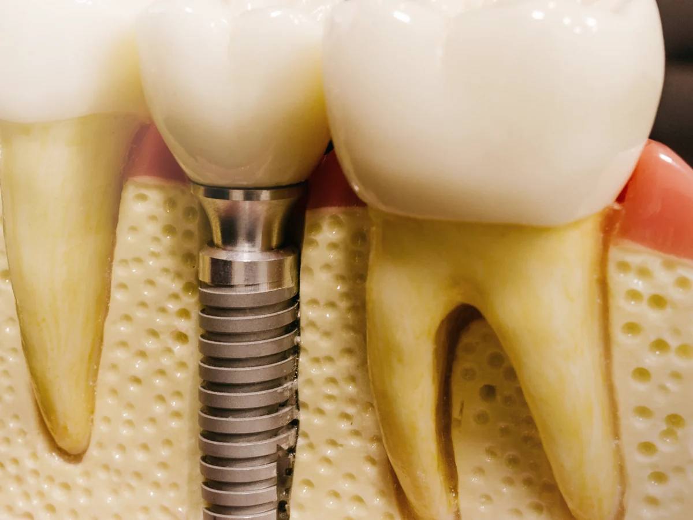
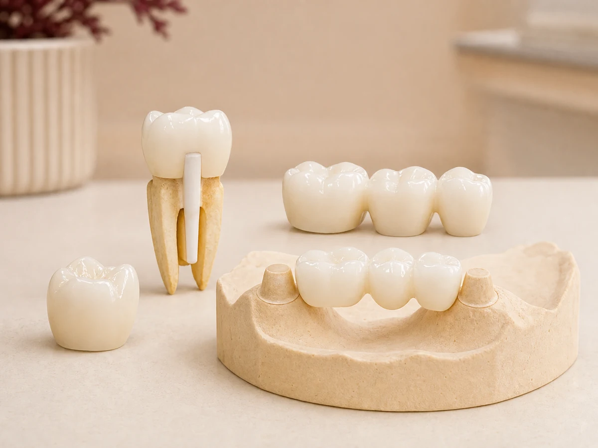
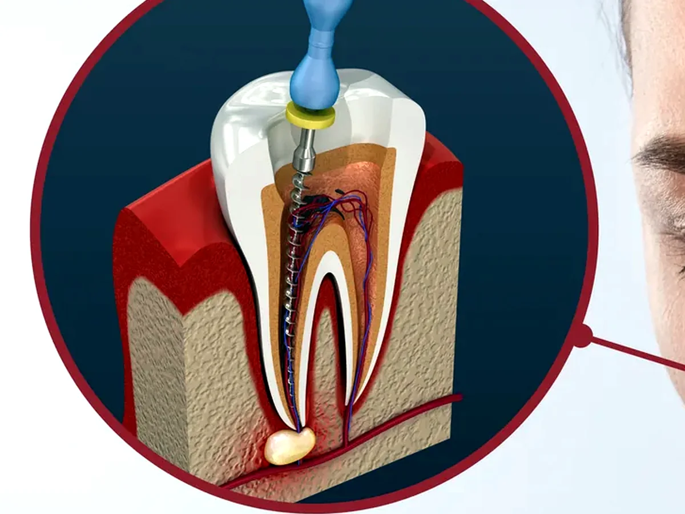

Do cuidado de rotina
à reabilitação do sorriso.
Organizamos os tratamentos por aquilo que você sente ou precisa resolver: prevenção, estética, próteses, implantes, cirurgias e canal.





O cuidado que evita problemas maiores.
Limpeza dental, avaliação preventiva e tratamento de cáries ajudam a manter a boca saudável antes que dor, fratura ou infecção apareçam.
- Limpeza dental e profilaxia
- Tratamento de cáries e restaurações
- Avaliação preventiva e retorno periódico
- Orientação de higiene para a rotina de casa
Um sorriso bonito sem perder a naturalidade.
O objetivo é melhorar cor, forma e harmonia do sorriso com planejamento, indicação correta e um resultado que combine com o seu rosto.
- Clareamento dental supervisionado
- Facetas e lentes de contato dental
- Planejamento do sorriso
- Troca de restaurações aparentes quando indicado
Quando falta dente, planejamento vem antes.
Implantes, extrações, sisos e cirurgias são avaliados com cuidado para devolver função, mastigação e segurança sem pular etapas importantes.
- Implantes unitários e planejamento de reabilitação
- Extrações e cirurgia de sisos
- Enxertos ósseos quando há perda de estrutura
- L-PRF como apoio à cicatrização em casos indicados
Recuperar dentes também é recuperar conforto.
Próteses podem devolver forma, função e estética quando há dentes quebrados, ausentes ou enfraquecidos, inclusive em casos em que ainda existe raiz aproveitável.
- Coroas dentárias e próteses fixas
- Próteses removíveis quando essa for a melhor indicação
- Pino/núcleo intrarradicular com coroa para dentes com raiz preservada
- Prótese sobre implante quando o planejamento indicar implante
Tratamento de canal para preservar seu dente.
Quando existe dor, sensibilidade forte, infecção ou cárie profunda, o canal pode aliviar o incômodo e manter o dente natural em boca.
- Avaliação de dor de dente e sensibilidade
- Tratamento de canal
- Controle de infecções de origem dental
- Acompanhamento para preservar o dente natural
Não sabe qual tratamento precisa?
Chame no WhatsApp. A avaliação inicial ajuda a entender o caminho mais indicado para o seu caso.